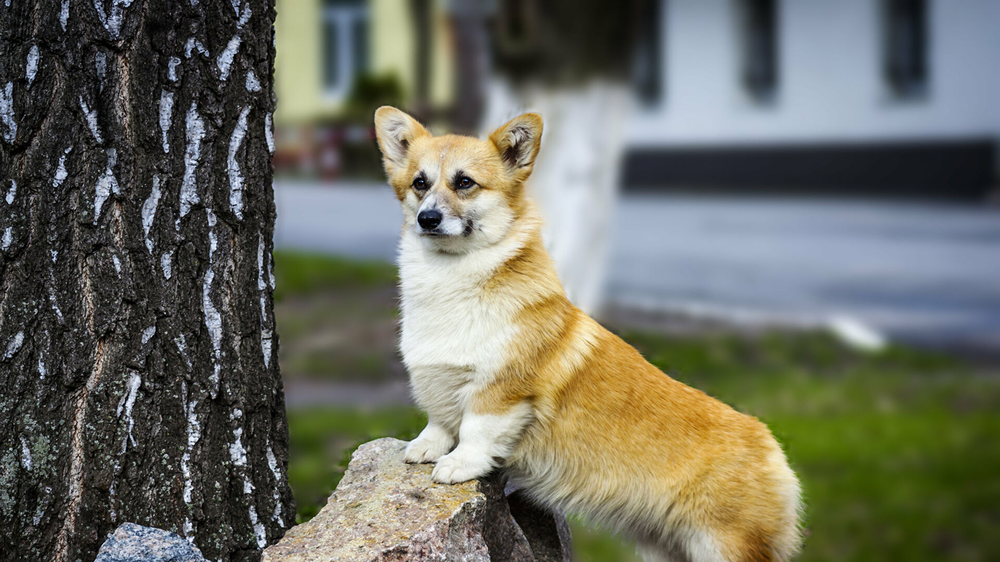

СОБАКА-ПЕНСИОНЕРКА
Существуют страны, в которым собакам, служившим в полиции, выплачивают пенсию. Так, правительство
графства в центре Англии платит собакам по 800 долларов в течение 3 лет, чтобы они могли посещать
ветеринара. В этом случае собака, как правило, живет со своим куратором.
ИГРА В ПОДДАВКИ
Ученые выяснили, что щенки-мальчики во время игр поддаются девочкам, позволяя им выиграть! Ученые
предполагают, что так мальчики поступают для того, чтобы самки в будущем не боялись с ними играть.
Подобное поведение наблюдается и у других особей, в том числе и у людей.
ЛЮБОВЬ С НАЧАЛА ВРЕМЕН
В Древнем Риме и Греции люди оплакивали своих четвероногих друзей и хоронили их. Так, была обнаружена
одна древняя эпитафия на одном из надгробий, которая звучит следующим образом: «Я в печали, так как,
неся тебя к твоему последнему пристанищу, все равно вспоминаю, как радовался пятнадцать лет назад, когда
сам принес тебя домой».
САМАЯ УМНАЯ В МИРЕ СОБАКА
Собака породы Бордер-колли, имя которой Челси, была по праву признана самой умной собакой в мире. Чем же
она отличилась? Эта четвероногая умница могла опознать 1022 игрушки по их названию! Хозяином этой колли
был профессор психологии Джон Пилли, который рассказал, что понял, что его собака умнее других, когда ей
было около 5 месяцев. Чтобы вы понимали, насколько крута эта собака - средний словарный запас выпускника
средней школы - это всего 1500-4000 слов.